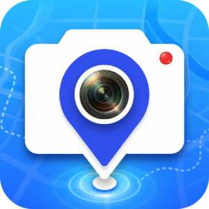

Timestamp Camera · 小美水印相机
Choose your language
选择语言
Add time, GPS, map, address, and weather watermarks to photos and videos.
为照片和视频添加时间、GPS、地图、地址与天气水印。

Timestamp Camera · 小美水印相机
Add time, GPS, map, address, and weather watermarks to photos and videos.
为照片和视频添加时间、GPS、地图、地址与天气水印。